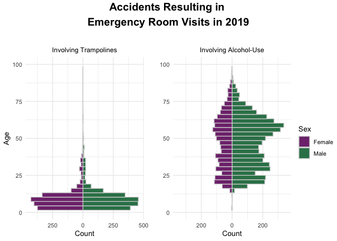
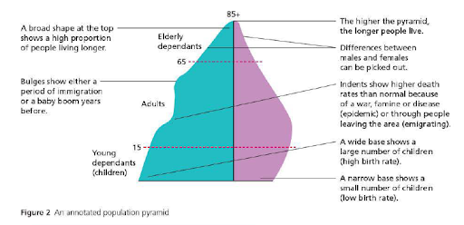

All About the Population Pyramid!

A Population Pyramid, also known as an Age and Sex Pyramid is a histogram-like visualization often used to provide a succinct, elegant summary of differences in distribution of groups within a population. The population is broken up by a two-level factor variable, with one on each side of the visualization, and then the data is binned based on a continuous variable. Although population pyramids typically use a factor variable of sex (male and female), and a continuous variable of age, and are often used to convey such information as a country’s fertility rate, the visualization can be generalized to other situations, in which it may be referred to as simply a “dual-sided histogram”. The type of visualization is a handy way to enhance a typical histogram by splitting it into two factor variables in order to facilitate comparison across groups within a population, while still being able to make observations about the population as a whole.
How to Read a Population Pyramid Visualization
There are several useful takeaways that can be gleaned quickly and easily using a population pyramid:
-
How the overall distribution changes on the basis of age: To get a sense of the age distribution for the overall population, one can simply examine the shape of the plot/pyramid, focusing on how width changes from top to bottom. The wider the plot at any particular height, the more individuals in the age group corresponding to that position on the y-axis contribute to the overall population. So, if the “base”/bottom is wide compared to the rest of the plot, giving it a “pyramid”-like shape, the population is comprised of mostly younger individuals. However, if the overall “pyramid” is more rectangular, the age distribution is balanced. An upside-down pyramid would indicate a generally older population, and a “bulge” could indicate something like a baby boom around that particular age bracket’s birth years.
-
How the overall distribution differs based on sex: This is a fairly simple piece of information to glean from this type of plot – if the pyramid is heavier on one side than the other, then the population is skewed more heavily toward one particular sex than the other.
-
How the sex distribution changes as a function of age: We also can take into account both of the variables above and determine whether the sex distribution differs based on the age of that segment of the population. It’s difficult to think of an example that is not tragic, but, say, a plot of the demographics of the U.S. shortly after World War II may have more females than males in the age bracket 18-25 years old, but would likely be balanced in age brackets younger and older. In this case, the pyramid would be vertically asymmetric, with a “notch” on the male side at that age bracket. Examining the plot for these notches is a quick, simple way to determine whether the sex distribution differs for a particular age group.
Finally, in traditional population pyramids which depict age/sex distribution in a particular region, there are three shapes so commonly seen that they are given specific labels: expanding, contracting, and stationary, as shown below (graphic, as well as paraphrased information on each shape from a paper by Daniel Staetsky, full citation can be found in final section):
A very triangular shape, with many more young representatives than older, as in the expanding pyramid, is indicative of a population that is growing, along with high fertility/mortality rates. The contracting shape, where the pyramid is pinched at the base is indicative of low fertility/mortality rates, corresponding to a population with few young people, relative to the rest of the group. Finally, the stationary pyramid, which has a columnal shape, tends to correspond to stable populations, with balanced, low fertility and mortality rates.
Disclosure: Given the wide spectrum of gender identities present in modern society, I can absolutely understand how some may object to the binary nature of the population pyramid. Although I, and most who employ this type of visualization, specify the binary factor as biological “sex”, not gender, issues still remain. After a quick search, it doesn’t look like many have addressed this issue currently, but I would not be surprised to see multi-way analyses in the future (population stars??)!
Data
The data used to generate the examples at the top of this page comes from the United States Consumer Product Safety Commission’s National Electronic Injury Surveillance System dataset, which can be found at the following link: https://www.cpsc.gov/Research--Statistics/NEISS-Injury-Data . This dataset is quite rich, containing data gathered from a large number of emergency departments in the US. The overall dataset contains demographic information, including sex, age, and ethnicity, as well as a number of other interesting pieces of information including whether a particular product was involved in the injury (as in the left plot above, which includes all ER visits in the dataset from 2019 which involved a trampoline), and whether drugs or alcohol were involved in the injury. The dataset also includes for each datapoint/injury, a brief narrative outlining the loose details of the incident. The website contains a neat query system where the user can narrow down the dataset by filtering for year, product involved, and other data characteristics.
Figure-Specific Details
I opted to use a population pyramid for a slighly atypical analysis in the , that is, to examine the demographics of patients who visited a number of U.S. emergency rooms in 2019, using the dataset described above. I chose to narrow the dataset to two types of emergency room incidents, to depict two very different-looking population pyramids: the left plot shows the distribution of patients who visited the ER due to trampoline-related accidents, and the right plot shows the same of patients who visited the ER due to incidents involving the use of alcohol.
I’ll use the general framework for interpreting a population pyramid described above to discuss the information I gleaned from these plots, first analyzing the plot on the left, then the plot on the right.
Trampoline-Based Injuries
As stated, this plot shows a breakdown of the age and sex characteristics of the group of individuals who visited the emergency room due to trampoline accidents in 2019. Prior to generating the plot, I hypothesized that the shape would be heavy at the base, and thinner on the top, as children are typical trampoline users, and I recall from my daredevil youth that I much preferred playing on a trampoline without a protective net. Though as an adult, I still struggle to ignore the siren song of the trampoline, I tend to be more careful than when I was a child. Stereotypes might lead some to believe that male children are more prone to taking trampoline-related risks, but I knew many a reckless young female when I was growing up, so I hypothesized a symmetric pyramid.
Indeed, this is what the plot shows – a very heavy base, with a peak around 9-10 years old. Around the teenage years, these injuries drop off significantly, although not completely, perhaps in part due to some in the 25-40 year old age group having young children, and being tempted by their child’s trampoline. However, once we hit the mid-40’s, there are very few representatives from that cohort and older in this population. Additionally, the plot is quite symmetric – males and females are more-or-less equally represented in this population. There doesn’t appear to be an interaction of age and sex, as there are no bulges or notches present on one side but not the other.
Accidents Involving Alcohol
A slightly more sobering (sorry!) analysis is on the right – a population pyramid showing the age/sex distribution amongst ER visits resulting from alcohol-related injuries. In this case, I did hypothesize a difference between sexes, with males making up a somewhat larger proportion of the population, though still a fair few females. I also predicted a pear-shaped pyramid, with very few representatives from the 0-20 year old cohort, the bulk of patients in the 20-30 year old range, and a consistent taper down as age increased.
I was somewhat surprised by the shape of the resulting plot. Although I’d anticipated a plot that was heavier on the male side than the female side, I hadn’t expected the difference to be so dramatic. Almost across the board, each male age cohort has about double (if not more) members than the corresponding female cohort. I was also surprised to see bimodal distributions on both sides, with a bulge from about the mid-teens through around 35, but then an even larger bulge in the older years, peaking around the early-to-mid sixties. Folks getting wild in their retirement years! Though females are represented less in the overall population distribution, these characteristics are still present in that sub-population’s distribution.
I could see analyses like these being useful for target specific groups to recieve safety training on a particular product, deciding who to design flyers for, which, say, encourage moderation and safety when consuming alcohol, or to determine suggested age ranges for certain play equipment.
Presentation Tips
Color: Typically, this type of visualization uses color in a simple fashion, either using a uniform color and annotating each side with the appropriate label, or selecting two distinct colors to distinguish between one side and the other. Since a population pyramid generally plots the distribution of males versus females, we often see plots that select pink for the female distribution and blue for the male distribution. However, this is a bit of an anachronism in today’s society, as these colors carry the weight of long-term stereotypical gender associations. Some argue that choosing these colors allows for speedy interpretation of the figure, however, if a reader has so little time or mental energy that scanning a legend is unmanagable, then, well, perhaps they should skip looking at the figure altogether. Interestingly, it has been suggested that simply flipping the colors around can be problematic, as it can lead to confusion due to the aforementioned speedy interpretation of those particular colors in a figure.
So, I chose to create a graph with different colors altogether, inspired by the color choices in the Telegraph; green for males, and purple for females. A discussion of the motivation behind this choice, as well as more detailed arguments against the selection of blue/pink to distinguish male/female populations can be found at the following link: https://blog.datawrapper.de/gendercolor/ .
Although some may consider it an attractive or interesting design detail to apply a color gratient based on age, this is not a common choice. Not only is it unnecessary to code this using color, since the axis makes the age range quite clear, it could also distract readers.
Finally, avoid this color choice for this type of visualization at all costs! (But please do use this very attractive 70’s-inspired rainbow palette for your artistic projects!)
Composition: Since these plots are fairly straight-forward, there are only a few small details to keep in mind regarding composition. The first is that even if the most populous bin in on one side is less than the most populous bin on the other, the x-axis should range from [-n, n], with n corresponding to the most populous bin overall. Although this is a small detail, this places the line dividing the sex/two-factor distributions directly in the middle of the plot, which can aid in accurate comparison of one sub-population versus the other. Also, in my opinion, it is much more visually harmonious.
Annotation:
The Population Pyramid is a useful visualization in no small part because of the rich possibilities of interpretation without the need for excessive labeling or annotation. However, if a particular feature of the shape of the plot corresponds to, say, a cultural event that is relevant to the context of the figure, it would be acceptable to add a small annotation to the plot, indicating the events related to the feature of the plot. As with all graph annotation, it is better to keep it minimal and clean. Below is an example of a well-annotated population pyramid (although perhaps with a bit much going on, I would personally keep it to one or two annotations):
Although the annotations/labels add a fair bit of busyness to the figure, the story behind the plot is enriched with the additional details. Note that in addition to the annotations, the figure overlays the outline of a population pyramid from an earlier date on top of the more recent pyramid. This also allows additional temporal information to the figure’s story, which I find to be quite effective.
In contrast, here is a poorly annotated population pyramid:
First of all…that font! But, that is not relevant to the discussion of the pyramid itself. In this case, although there is certainly information added through the annotations, the positioning and quantity of labels distracts from the overall impact of the figure. This quantity of information would be better suited to a narrative setting, alongside the figure, perhaps with numerical annotations indicating the feature of the plot that corresponds with the additional contextual information. However, the lines indicating the positions on the plat that correspond to each annotation are confusing, in that they point directly to one or the other side of the pyramid. This configuration could come across to the viewer as if only one of the sub-populations corresponds to the information in the annotation, e.g. the middle annotation on the right-hand side appears to be referring only to the female side of the pyramid, however, certainly females are not the only humans who will age!
Methods
Below is the code used to create one of the population pyramids, broken
up into a chunk that shows the data wrangling process, and then one
showing the plot generation, including the ggarrange() call that was
used to combine the two plots.
Data Wrangling
The data wrangling process was pretty straight-forward after downloading
the data from the link provided in the data section, specifically
downloading and working with the entire dataset from 2019. The .xlsx
file consists of a row corresponding to each emergency room visit, and
the columns to each piece of information related to that incident, so I
simply had to narrow down the dataset to only include rows where the
column alcohol_involved was equal to one. I also filtered out rows
with age values higher than 100, as there were some instances where the
age column contained a code that was not the actual age in years. I also
filtered out rows where the patient’s sex was unknown.
Since the dataset originally included column names with spaces, a
configuration that does not play well with R code, I used the handy
janitor::clean_names() function to convert the column names into
R-friendly strings. Finally, I replaced the 1/2 indicators with
“Male”/“Female”, primarily as a hacky way of making the plot’s legend
more attractive, although this could have been done directly during the
plotting phase. Finally, I narrowed the dataset down to just the sex and
age columns, which is all that was needed for the population pyramids.
alcohol_data <- read_excel("neiss2019.xlsx") %>%
janitor::clean_names() %>%
filter(alcohol_involved == 1, sex != 0, age < 100) %>%
mutate(sex = ifelse(sex == 1, "Male", "Female")) %>%
select(sex, age)
Plotting
The plots I created were adapted from code a couple of handy tutorials;
the first two links in the citation section below. The two plots were
then set up to display side-by-side using ggarrange(). Each function
call is annotated in the R chunk below:
booze_pyramid <- ggplot(data = alcohol_data, aes(x = age, fill = sex)) + # Basic ggplot call,
# specifying age as the
# x-values and the
# fill value to be
# selected based on the
# sex value.
geom_histogram(data = subset(alcohol_data, sex == "Male"), # Creating the histogram
bins = 35, color = "lightgrey") + # for the male data.
geom_histogram(data = subset(alcohol_data, sex == "Female"),# Creating the histogram for
mapping = aes(y = - ..count.. ), # the female data. Note that
position = "identity", # the count/y is mapped to
bins = 35, color = "lightgrey") + # negative values, to flip
# the bars.
scale_y_continuous(limits = c(-350, 350), labels = abs) + # Manually setting the axis
scale_x_continuous(limits = c(0, 100)) + # ranges.
coord_flip() + # Flipping the x/y axes.
ggtitle("Involving Alcohol-Use") + # Tweaking the title and
ylab("Count") + # other details.
theme_minimal() +
theme(plot.title = element_text(size = 10, hjust = 0.5)) +
scale_fill_manual(values = c("#80337c", "#338057"))
The ggarrange() call is included below, as this is a handy function to
include several individual plots in a single overall figure.
pyramid_two <- ggarrange(trampoline_pyramid, booze_pyramid, heights = c(2, 2), # Call to ggarrange,
ncol = 2, nrow = 1, common.legend = TRUE, align = 'v', # passing in both plot
# objects and setting
legend = "right") %>% # display params.
# Adding "overall" fig
# title.
annotate_figure(top = text_grob("Accidents Resulting in \nEmergency Room Visits in 2019\n ",
face = "bold", size = 16))
## Warning: Removed 2 rows containing missing values (geom_bar).
## Warning: Removed 2 rows containing missing values (geom_bar).
## Warning: Removed 2 rows containing missing values (geom_bar).
## Warning: Removed 2 rows containing missing values (geom_bar).
## Warning: Removed 2 rows containing missing values (geom_bar).
## Warning: Removed 2 rows containing missing values (geom_bar).
Additional Citations
Staetsky, Daniel. (2015). Strictly Orthodox Rising: what the demography of British Jews tells us about the future of the community.
https://rpubs.com/walkerke/pyramids_ggplot2 https://stackoverflow.com/questions/14680075/simpler-population-pyramid-in-ggplot2 https://www.cpsc.gov/Research--Statistics/NEISS-Injury-Data https://www.whiteplainspublicschools.org/cms/lib/NY01000029/Centricity/Domain/353/Population%20Pyramids%20Geography.pdf https://populationeducation.org/what-are-different-types-population-pyramids/ https://docs.google.com/spreadsheets/d/1wZhPLMCHKJvwOkP4juclhjFgqIY8fQFMemwKL2c64vk/edit#gid=0 https://datavizcatalogue.com